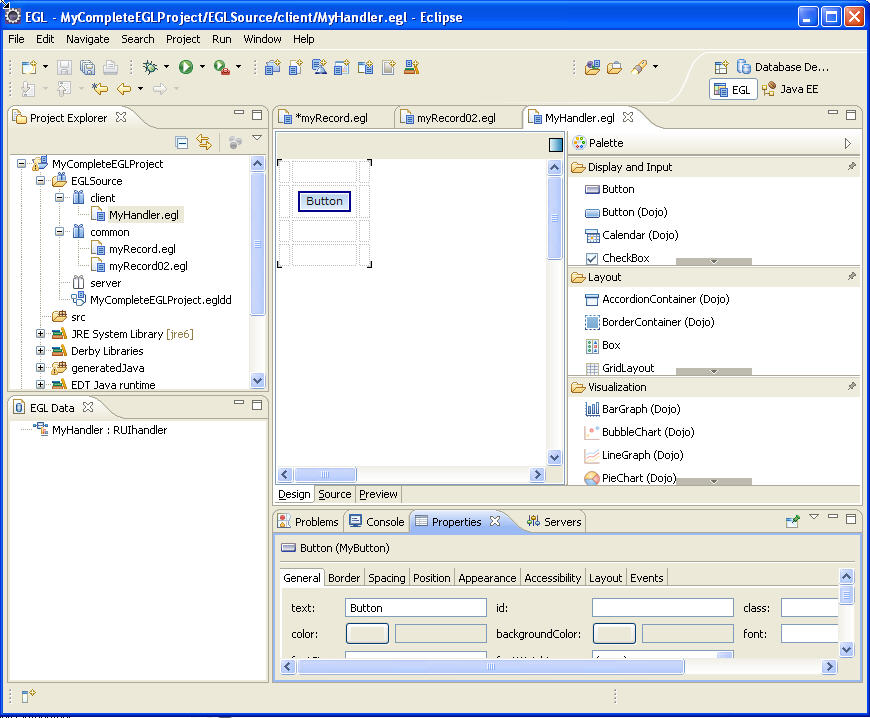

You can use the EGL Rich UI editor to modify a Rich UI handler and to preview the handler's runtime behavior.
Here is an example of an open file in the Rich UI editor.

When you drag a widget from the palette to the Design surface, the areas that can receive the widget are called potential drop locations, and the color of those areas is yellow by default. When you hover over a potential drop location, the area is called a selected drop location, and the color of that area is green by default. You can customize the colors in the Workbench preferences.
When you first drag a widget to the Design surface, the entire surface is a selected drop location, and the effect of the drop is to declare the widget and to identify it as the first element in the Rich UI handler's initialUI property. That property accepts an array of widgets at development time. The array is ultimately used to create a DOM tree, which is a runtime data structure described here: [ to be added]
Specifically, the elements in the Rich UI handler's initialUI array become children of the document element, with the order of initialUI array elements at development time equivalent to the order of sibling DOM elements at run time.
Your subsequent work continues to build the DOM tree. You can repeatedly fulfill drag-and-drop operations, with the placement of a widget determining what array is affected and where the widget is placed in the array. The drag-and-drop operation is an alternative to writing a widget declaration and array assignment in the code itself, whether in the Source tab of the Rich UI editor or in the EGL editor.
New widget declarations are added to the source code before the declarations that were already there; that is, the order of the statements is opposite to the order of the drag-and-drop operations.
The Design surface is composed of two layers. The bottom layer is the web browser, which displays widgets, including initial text values. The top layer is an editing overlay, including angle brackets at each corner of each widget.
The background of the top layer can have any of the following characteristics: transparent, a pattern of white and transparent dots, or (on Windows™ platforms) a white layer with a varying level of transparency. You can set those transparency options by setting a Workbench preference, as described in "Setting preferences for Rich UI appearance." When you are working in the editor, you can change the transparency options that are in use for the editing session.